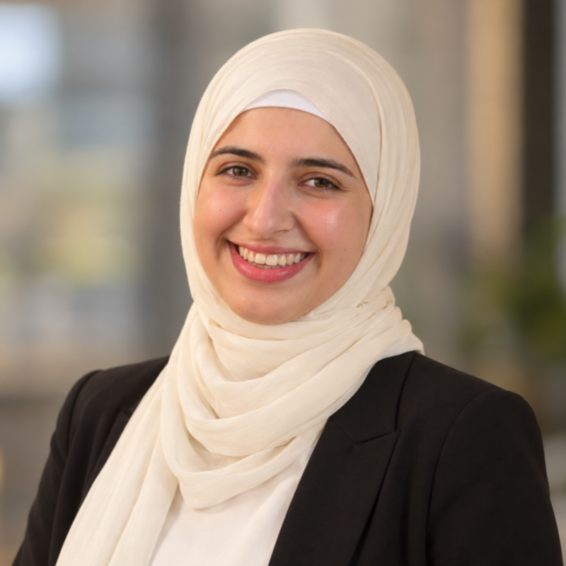

Lara Tarkh
Graduate Researcher, Computer Science
- Visiting Researcher, Prof. Raouf Boutaba's group
- David R. Cheriton School of Computer Science
- University of Waterloo
Ontario, Canada · ltarkh@uwo.ca

Hi, I'm Lara! I'm a computer science researcher working where wireless networks, systems, and machine learning meet. Right now I'm a Visiting Researcher in Prof. Raouf Boutaba's group at the University of Waterloo, in a project supported by Canada's Department of National Defence.
I did my MSc in Computer Science at Western University and my BSc in Applied Mathematics at the American University of Beirut.
I'm always happy to talk about research, so feel free to send me an email.
Research interests
- 5G/B5G mobility & roaming
- Handover prediction
- Network slicing & VNF placement
- Reinforcement learning for networks
- Service continuity
- 5G core testbeds
Recent news All news →
- Funding Received funding from Labs4 to explore taking my research beyond the lab.
- Wrapped up the MAX Mentorships program — grateful for every mentor and mentee I got to meet along the way.